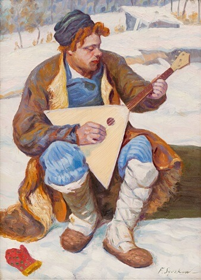
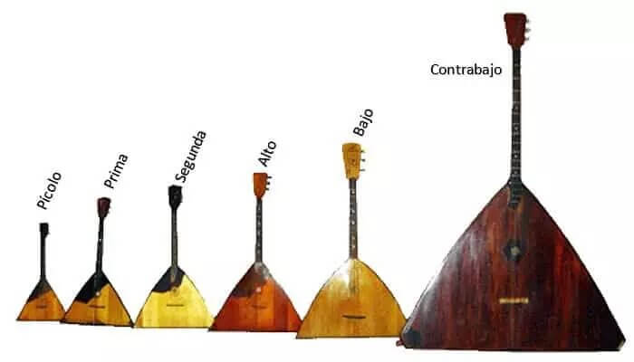

{kind=link}
La balalaika es, realmente, una familia de instrumentos de diferentes tamaños, que van desde las que emiten
sonidos muy altos, hasta las que emiten sonidos muy bajos. Así, tenemos la balalaika pícolo, la prima, la
segunda, la alto, la bajo y la contrabajo. Existen orquestas de consistentes únicamente de este instrumento.
Estos ensambles tocan música clásica que ha sido arreglada para estos instrumentos.
La balalaika prima es la más común, en cambio, la pícolo es la menos usada. También ha habido balalaikas
para adornar y balalaikas tenor, pero éstas ya se consideran obsoletas. Las balalaikas más usadas (prima,
segunda y alto), se tocan tanto con los dedos como por pajuelas, según de la música o los pasajes temáticos
que se estén desarrollando. La balalaika bajo y la balalaika contrabajo (provistas de patas o picas para que
puedan descansar sobre el piso) se tocan con pajuelas hechas de cuero. El pícolo suele tocarse sólo con
pajuela.
Historia.
El término “balabaika” se encontró en un documento de lengua ucraniana en el siglo XVII. Algunas hipótesis sugieren que la balalaika desciende del domra, un instrumento típicamente eslavo. En Kazajistán, existe un domra que tiene dos cuerdas, al igual que el topshur de Mongolia.Primer periodo
 Las primeras imágenes que se tiene de las balalaikas muestran un instrumento que tiene desde 2 a 6 cuerdas, que recuerda a ciertos instrumentos de Asia Central. Los trastes de las primeras balalaikas eran hechos de intestinos de animales y atados alrededor del mástil de tal manera que podían ser movidos por el ejecutante, como los capotrastes modernos.El primer documento conocido donde se menciona una balalaika data de 1688. Un cuaderno de un guardia del Kremlin, en Moscú, reporta que dos comuneros fueron detenidos por estar tocando la balalaika en estado de ebriedad.
Existe una teoría que sostiene que el término fue prestado al ruso, donde en lenguaje literario apareció por vez primera en el poema Eliseo escrito por el poeta Máikov. El término balalaika también aparece en el poema de Gogol, Almas muertas, escrito entre 1837 y 1842. Estampa de la vida rusa del siglo XIX. Se trata de un ritual de boda pintado por Nikolai Petrovich Petrov en 1861. La novia es ataviada con música de balalaika de fondo.
En el siglo XIX, la balalaika ya era el instrumento triangular de tres cuerdas que se conoce hoy. Los historiadores afirman que la balalaika fue popular entre el pueblo eslavo durante muchos siglos, y era particularmente usado por los skomorokhs, juglares y comediantes libres que solían ridiculizar al Zar y su corte con canciones y parodias teatrales.
El primer periodo de la balalaika es llamado por los historiadores musicales como período pre-Andreyev, en referencia al músico Vasily Vasilievich Andreyev, quien desarrolló la técnicas estándar para tocar la balalaika, llevándola a un nivel más elevado de ejecución.
Según periodo.
 También conocido como periodo Andreyev. En 1880, Andreyev, un violinista profesional de los salones
musicales de San Petersburgo, desarrolló la balalaika estándar de hoy, con la ayuda de un luthier de
apellido Ivanov. De esta manera el instrumento empezó a ser usado en sus propios conciertos.
También conocido como periodo Andreyev. En 1880, Andreyev, un violinista profesional de los salones
musicales de San Petersburgo, desarrolló la balalaika estándar de hoy, con la ayuda de un luthier de
apellido Ivanov. De esta manera el instrumento empezó a ser usado en sus propios conciertos.
Pocos años después, otro luthier, Paserbsky, refinó el instrumento, añadiendo un conjunto de trastes para dar cromatismo al instrumento, además de producir balalaikas de diferentes dimensiones y afinaciones para la estructuración de las orquestas. Andreyev, patentó el diseño y realizó numerosos arreglos de la música tradicional rusa para llevarla a la orquesta de balalaikas. También compuso sus propias obras para este instrumento. En el centro, Andreyev con su balalaika prima. A la izquierda, una balalaika siberiana del siglo XIX que reposa en el múseo Krasnoyarsk Krai. A la derecha, una muy adornada balalaika de principios del siglo XX.
El resultado final de la labor de Andreyev fue el establecimiento de una orquesta folclórica tradicional en la rusia zarista, la cual, posteriormente, se convirtió en todo un movimiento en lo que fuera la Unión Soviética. Las orquestas de balalaikas están compuestas principalmente de este instrumento, pero están acompañadas por otros instrumentos tradicionales rusos de diversa naturaleza (cuerda, percusión, viento).
El gobierno soviético apoyó con recursos humanos y materiales el desarrollo de las orquestas de balalaika, lo cual consolidó la presencia general de este instrumento, como instrumento típico, no solo de rusia sino en todo el territorio de la hoy extinta Unión de Repúblicas Soviéticas Socialistas; sin embargo, se extendió hasta el presente, a tal punto que ya se encuentran composiciones de música académica para balalaika y orquesta.
Tipos de balalaika.
 Entre las diferentes balalaikas, la más común es la prima, la cual se afina E4-E4-A4. De tal manera que las dos cuerdas más graves están afinadas con la misma nota. Algunas veces la balalaika es afinada “tipo guitarra” por los músicos populares, es decir, G3-B3-D4 (imitando las tres cuerdas altas de la guitarra rusa), lo cual hace que la balalaika sea fácil de tocar para los guitarristas rusos. Aunque los instrumentistas más puristas evitan esta afinación.Esta balalaika también puede afinarse en E4-A4-D5, tal como su primo, el domra, para facilitar a los tocadores de balalaika tocar el domra y aún así, conservar el sonido de la balalaika. La afinación folclórica (pre-Andreyev) de D4-F#4-A4, fue muy popular, y hacía fácil tocar ciertos temas o riffs.
-
Balalaika de adornos.
Hoy extinta, como su nombre lo dice, solía usarse para adornar con punteos o temas (riffs) encima de la
melodía que era tocada por otras balalaikas o instrumentos. Medía cerca de 46 cm de largo. Tenía una
afinación de E5-E5-A5.
-
Balalaika pícolo.
Rara vez usada. De aproximadamente 60 cm de largo, se afina B4-E5-A5 .
-
Balalaika prima.
Es la más usada en las orquestas de balalaikas. Mide entre 65 y 70 cm de largo. Se afina E5-E5-A5.
Algunos
fabricantes han creado balalaikas primas de seis cuerdas para parear las tres cuerdas tradicionales en
un
conjunto de doble cuerda, tal como sucede con las mandolinas. Estas balalaikas suelen tener la afinación
tipo guitarra. Las balalaikas primas, para aficionados o las fabricadas para suvenir, usualmente tienen
16
trastes, mientras que en las profesionales, tienen 24.
-
Balalaika segunda.
Muy usadas en las orquestas de balalaikas. Mide entre 70-75 cm. Están afinadas con tonalidades más
bajas. Se
afina en A3-A3-D4.
-
Balalaika alto.
Muy usadas en las orquestas de este instrumento. Mide alrededor de 80 cm. Afinación: E3-E3 -A3. Existen
también balalaikas de registro alto con cuatro cuerdas.
-
Balalaika tenor
También en desuso. Medía entre 90-100 cm de largo. Se afinaba en E3-A3-E3.
-
Balalaika bajo.
Empleada, principalmente, en las orquestas de balalaikas. Mide entre 100-105 cm de largo. Afinación:
E2-A2-D3
-
Balalaika contrabajo.
Rara vez usada, sin embargo, algunas orquestas la incorporan en sus secciones. Mide entre 120-170 cm de
largo. Afinación: E1-A1-D2.